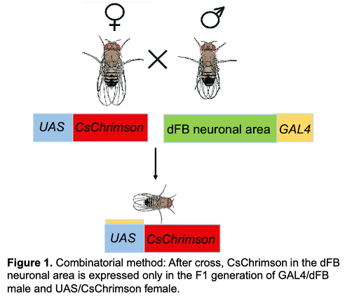

Optogenetics in Fruit Flies
Overview
This study uses optogentics, the technology in which light is used to manipulate certain parts of the brain, to study the role of dFB neurons in regulating sleep in fruit flies.
Knowledge Gap
Our studies primarily focus on sleep homeostasis in Drosophila melanogaster. While many studies have aimed to determine the factors that may regulate or induce sleeping patterns, extensive research of effects of specific stimulant is much needed in the field. Our main goal is to fully understand dFB neurons, how they influence sleep, and how they are influenced by stimulants such as caffeine via the dopaminergic pathway. Thus, we aim to develop a better understanding of the mechanisms that may alter sleeping behavior in humans, which will hopefully aid in a better understanding of the pathophysiology of several sleeping disorders.
How the dFB Neurons are Manipulated using Optogenetics
 The GAL4/UAS is a system utilized to regulate gene expression in Drosophila. UAS (Upstream Activation Sequence) is an enhancer of a specific gene of interest, which can be activated by the binding of Gal4, a yeast transcriptional activator. Through this system, offspring carrying UAS and the gene of interest will not express that gene’s transcription factor unless they also have the activator UAS. Therefore, this system allows for the expression of specific genes. In this study, we will combine the use of Gal-4/UAS system with the mechanism of optogenetics to express our specific gene of interest. Optogenetics is a tool that utilizes the light-sensitivity trait of channelrhodopsins to activate different nerves based on associated light wavelengths. Hence, we will combine these two methods by crossing two sets of flies: ones with Gal-4 protein expression in their dorsal fan-shaped body (dFB) neurons, and ones with their CsChrimson regulated by UAS. With this cross, the CsChrimson channelrhodopsin will now be expressed in the dorsal fan-shaped body subset in F1 flies (Figure 1). By combining these two methods via genetic crossing, we are able to control when the dFB neurons are activated by introducing a red light (625 nm) to the Drosophila.
The channelrhodopsin CsChrimson we will be using in the experiment is tagged with mVenus, a yellow fluorescent protein visible under the immunofluorescence microscope. Hence, we can utilize that to visualize and confirm expression pattern of the CsChrimson in dFB neurons of the F1 Drosophila (Figure 2). In general, we will analyze the morphological position of our gene of interest and the different regions in the Drosophila nervous system which will provide a deeper layer of understanding on an anatomical level.
Specific Aims & Experimental Design
- 1. Genetic crossing to express CsChrimson in dFB neuronal area in F1 generation.
-
To express these exact genes, we will cross Gal-4/dFB male Drosophila with UAS/CsChrimson female Drosophila. Flies will be sexed and a strong Gal-4/dFB male Drosophila will be crossed with a strong UAS/CsChrimson female Drosophila pupae to produce F1 generation and to ensure no contamination of other genetic makeup from other flies is introduced. The male fly and female pupae will be put in a clean vial with food and allowed one week for reproduction to produce F1 generation.
- 2. Dissecting of Drosophila brain to visualize neuroanatomical structure of the dFB neurons via immunofluorescence imaging.
-
To effectively verify a successful cross, we will dissect and mount the Drosophila brain. We will then observe the mounted brain under the fluorescence microscope. Three images will be captured and overlaid to express area we are trying to express.
- 3. Examining the role of dFB in the sleep pattern of Drosophila both with and without the treatment of caffeine.
-
Under the use of optogenetics, sleeping behaviors of Drosophila will be assessed. A control Drosophila fly, with no caffeine consumption, will be optogenetically treated by shining a red light with a wavelength of 625 nm for 60 seconds and behaviors will be recorded. This will set the threshold for sleep onset of Drosophila. We will then treat different Drosophila flies with caffeine and record the same data observed in control. Behaviors of each will be compared to determine if and how caffeine affects sleep onset and sleeping behaviors.